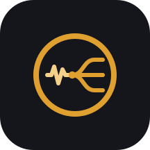

Begood Split · Separador de instrumentos para PC
Separe a música em faixas, no seu PC.
Programa grátis para Windows 10 e 11 que separa músicas em 6 faixas (voz, guitarra, baixo, bateria, piano e outros) ou em 4 (voz, baixo, bateria e outros), com inteligência artificial. Tudo no próprio PC, sem internet e sem instalar Python.
Windows 10 ou 11 · 64 bits · Grátis
Instalador de cerca de 200 MB, sem senha de administrador. Se o Windows avisar, clique em Mais informações › Executar assim mesmo.
Separar em faixas
- 6 faixas: voz, guitarra, baixo, bateria, piano e outros.
- 4 faixas: voz, baixo, bateria e outros (um pouco mais limpa na voz e na bateria).
- Inteligência artificial HTDemucs, a mesma usada pelos profissionais.
No seu PC
- Tudo no próprio computador, sem internet e sem mandar a música para lugar nenhum.
- Não precisa instalar Python nem nada além do programa.
- Sem cadastro, sem anúncios e sem limite de músicas.
Fácil de usar
- Arraste músicas ou pastas para a janela, ou para o ícone do programa.
- Separa várias músicas em fila, mostrando o progresso e o tempo que falta.
- Abre MP3, FLAC, WAV, M4A, OGG, OPUS, AAC, WMA, AIFF e outros.
Pronto para a DAW
- Formato à sua escolha: WAV 16 ou 24 bits, FLAC ou MP3 320 kbps.
- Arquivos numerados (01 Voz.wav, 02 Guitarra.wav…), todos alinhados: é só colocar um embaixo do outro no Reaper, Studio One ou Audacity.
- Também abrem no celular, no Begood Studio (Player › Biblioteca › Abrir faixas separadas).
Sempre atualizado
- Avisa sozinho quando sai uma versão nova.
- Também tem o botão Procurar atualizações.
- Baixe o instalador
No computador, clique em “Baixar para Windows” nesta página (cerca de 200 MB).
- Passe pelo aviso do Windows
Se aparecer “O Windows protegeu o computador”, clique em “Mais informações › Executar assim mesmo”. O aviso aparece porque o programa não tem assinatura digital paga.
- Instale
Siga o instalador. Ele não pede senha de administrador.
- Separe
Arraste as músicas, escolha 6 ou 4 faixas e o formato e clique em Separar. As faixas vão para Documentos › Begood Split.
Atualizações: O programa avisa sozinho quando sai uma versão nova. É só baixar o instalador novo e instalar por cima.
Dica: A primeira separação demora um pouco mais, porque o separador é preparado uma única vez.
O que mudou na última versão.
Todas as versõesComo separar a voz e os instrumentos de uma música no PC?
Instale o Begood Split, arraste a música para a janela, escolha 6 faixas (voz, guitarra, baixo, bateria, piano e outros) ou 4 faixas e clique em Separar. Cada música vira uma pasta com um arquivo para cada instrumento.
Precisa de internet ou de Python?
Não. A separação é feita no próprio computador, sem internet, e o programa já vem com tudo que precisa. A internet só é usada para avisar quando sai uma versão nova.
Quanto tempo leva para separar uma música?
Depende do processador. Num PC de 12 núcleos, uma música de 4 minutos leva uns 4 minutos. A primeira vez demora um pouco mais.
Dá para usar as faixas numa DAW?
Dá. Os arquivos saem numerados e alinhados, em WAV 16 ou 24 bits, FLAC ou MP3: é só colocar um embaixo do outro no Reaper, Studio One, Audacity ou outra DAW.
Por que o Windows mostra um aviso ao instalar?
Porque o programa não tem assinatura digital paga. Clique em Mais informações › Executar assim mesmo. O código é aberto e pode ser conferido no GitHub.
Funciona em qual Windows?
Windows 10 ou 11, de 64 bits, com uns 4 GB de memória livre e cerca de 1 GB de disco.
Política de privacidade.
- Sem cadastro, sem anúncios e sem servidor próprio. A separação é feita no seu PC e as músicas nunca saem dele.
- A internet é usada só para conferir, no GitHub, se há versão nova. Nenhum dado seu é enviado; sem internet, o aviso simplesmente não aparece.
- O instalador não pede senha de administrador: instala só para o seu usuário.
| Requisito | Detalhe |
|---|---|
| Sistema | Windows 10 ou 11, 64 bits |
| Memória | Uns 4 GB livres |
| Disco | Cerca de 1 GB |
| Velocidade | Depende do processador: num PC de 12 núcleos, uma música de 4 minutos leva uns 4 minutos |
Créditos
- Demucs / HTDemucs (Meta), licença MIT.
- ONNX Runtime (Microsoft), licença MIT.
- FFmpeg, licença GPL.
- O Begood Split é um programa livre, licença GPL-3.0.
Código aberto: dá para conferir tudo isso no repositório no GitHub. Dúvidas ou problemas: abra uma issue.
Ajudou no seu som?
Os apps são gratuitos e vão continuar assim. Se algum faz parte do seu dia, dá para apoiar com um Pix de qualquer valor.

Chave Pix · e-mail
robertobegood+itau@gmail.com
Roberto Santos da Silva
00020126630014br.gov.bcb.pix0128robertobegood+itau@gmail.com0209Cafezinho5204000053039865802BR5923Roberto Santos da Silva6009Sao Paulo62070503***63047463